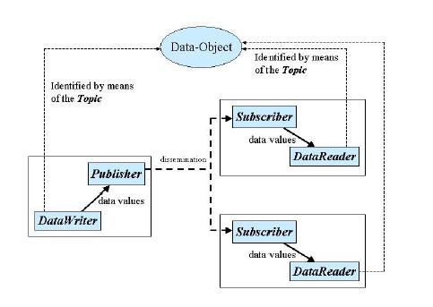
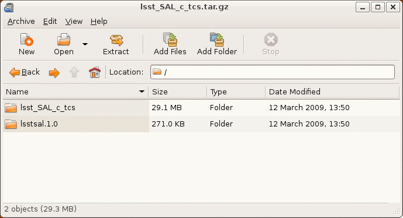
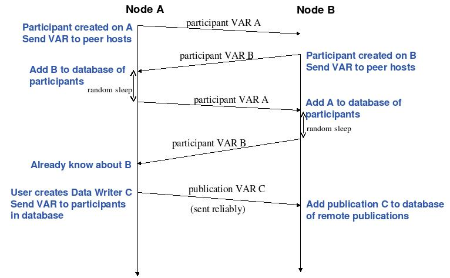

BEE - Back-End Electronic
CALSYS - Camera Calibration System
CCS - Camera Control System
DDS - Data Distribution
Service
FCS - Filter Controller Subsystem
FEE - Front End Electronics
FPA - Focal Plane Array Actuation
GAS - Guider
data acquisition system
GS - Guider system
L2U - L2 Controller Unit
LASERCAL - Camera metrology calibration System
LS
ST - Large Synoptic Survey Telescope
OMG - Object Management Group
PWR - Camera Power supply System
QA - Camera Quality
Assurance measurements
QoS - Quality of Service
RAS - Raft Alignment Subsystem
RTI - Real Time Innovation
SAL - Softw
are Abstraction Layer
SAS - Science Array System
SCU - Shutter Controller Unit
SDS - Science Data Acquisition System
TC - Thermal Control
TCM - Camera Timing control
VCS - Vacuum Control Subsystem
WDS - Wavefront data acquisition system<
BR>WFS - Wave-front Sensing System
WTCM - Camera wavefront sensors Timing control<
Datastream Definitions Document - Datastream Prototypes 1.1 (Document-1887)
Definition of subsystems - LSST Project WBS Dictionary (Document-985)
Documentation standards - LSST DM UML Modeling Conventions (Document-469)
Messaging standards - OMG DDS 1.1 (Document-1835)
Security policies - http://dev.lsstcorp.org/trac/attachment/wiki/Security/Security Policy documents.zip
Software Abstraction Layer API - Middleware Software Abstration Layer (Document-3692)
Software coding standards LSST C++ Programming Style Guidelines (Document-3046)
Vendor documentation - NDDS manual (Document-2241)
The combination of Client-Server and Publish-Subscribe models leads to the concept of Command/Action/Response model, in that the transmission of commands is decoupled from the action that executes that command. A command will return immediately; the action begins in a separate thread. Figure 3 illustrate this model by means of a simplified sequence diagram. When an application receives a command, it validates the attributes associated with that command and immediately accepts or rejects the command. If the command is accepted, the application then initiates an independent internal action to meet the conditions imposed by the command. Once those conditions have been met, an event is posted signifying the successful completion of the action (or the unsuccessful completion if the condition not be met). In this figure, callbacks are implemented using the event features of the publish-subscribe model.

Information flows with the aid of the following constructs : Publisher and DataWriter on the sending side, Subscriber, and DataReader on the receiving side.
A Publisher is an object responsible for data distribution. It may publish data of different data types. A DataWriter acts as a typed4 accessor to a publisher. The DataWriter is the object the application must use to communicate to a publisher the existence and value of data-objects of a given type. When data-object values have been communicated to the publisher through the appropriate data-writer, it is the publisher's responsibility to perform the distribution (the publisher will do this according to its own QoS, or the QoS attached to the corresponding data-writer). A publication is defined by the association of a data-writer to a publisher. This association expresses the intent of the application to publish the data described by the data-writer in the context provided by the publisher.
A Subscriber is an object responsible for receiving published data and making it available (according to the Subscribers QoS) to the receiving application. It may receive and dispatch data of different specified types. To access the received data, the application must use a typed DataReader attached to the subscriber. Thus, a subscription is defined by the association of a data-reader with a subscriber. This association expresses the intent of the application to subscribe to the data described by the data-reader in the context provided by the subscriber.
Topic objects conceptually fit between publications and subscriptions. Publications must be known in such a way that subscriptions can refer to them unambiguously. A Topic is meant to fulfill that purpose: it associates a name (unique in the domain), a data-type, and QoS related to the data itself. In addition to the topic QoS, the QoS of the DataWriter associated with that Topic and the QoS of the Publisher associated to the DataWriter control the behavior on the publisher's side, while the corresponding Topic, DataReader, and Subscriber QoS control the behavior on the subscribers side.
When an application wishes to publish data of a given type, it must create a Publisher (or reuse an already created one) and a DataWriter with all the characteristics of the desired publication. Similarly, when an application wishes to receive data, it must create a Subscriber (or reuse an already created one) and a DataReader to define the subscription.
QoS (Quality of Service) is a general concept that is used to specify the behavior of a service. Programming service behavior by means of QoS settings offers the advantage that the application developer only indicates what is wanted rather than how this QoS should be achieved. Generally speaking, QoS is comprised of several QoS policies. Each QoS policy is then an independent description that associates a name with a value. Describing QoS by means of a list of independent QoS policies gives rise to more flexibility.
This specification is designed to allow a clear separation between the publish and the subscribe sides, so that an application process that only participates as a publisher can embed just what strictly relates to publication. Similarly, an application process that participates only as a subscriber can embed only what strictly relates to subscription.
Underlying any data-centric publish subscribe system is a data model. This model defines the global data space and specifies how Publishers and Subscribers refer to portions of this space. The data-model can be as simple as a set of unrelated datastructures, each identified by a topic and a type. The topic provides an identifier that uniquely identifies some data items within the global data space1. The type provides structural information needed to tell the middleware how to manipulate the data and also allows the middleware to provide a level of type safety. However, the target applications often require a higher-level data model that allows expression of aggregation and coherence relationships among data elements.
The OCS Middleware provides multiple levels of access to the functionality provided. It is recommended that the highest level methods be utilized whenever possible.
The access levels are :
The SAL provides direct access to only a small subset of the total functionality
provided by the DDS, reducing both the amount of code required, and it's
complexity, as seen by the application programmer.
int svcSAL_initialize ()
Initalizes shared memory mapper tables.
int svcSAL_connect ( char *name )
Connects to object for named topic, returns handle number.
int svcSAL_connect1 ( char *name ,
svcSAL_cachehandle *svcSAL_handle1)
Connects to object for named topic, populates handle
structure with shared memory information.
int svcSAL_commandSHMID ( char *subsys,
int *cmdid,
int *respid )
Returns the shared memory information for the commmand and
response objects for the named subsystem.
int svcSAL_receiveDatastream (char *subsystem,
int timeout,
int (*datastreamCallback)(char *subsystem,
void *shmdata_ref ) )
Receive an update for a telemetry datastream topic. The call may optionally
wait on a timeout, wiat forever, or return immediately and issue a
callback once the next update arrives.
int svcSAL_receiveCommand (char *subsystem,
int timeout,
int (*commandCallback)(char *subsystem,
svcSAL_command *shmcmd_ref,
svcSAL_response *shmresp_ref ) )
Receive a command for the named subsystem. The call may optinally
wait on a timeout, wait forever, or return immediately and issue
a callback once the next command arrives.
int svcSAL_test_commandCallback (char *subsystem, svcSAL_command *shmcmd_ref, svcSAL_response *shmresp_ref )
A minimal implementation of the a command callback routine,
simply prints the commands to stdout.
int svcSAL_test_datastreamCallback (char *subsystem, int *shmdata_ref )
A minimal implementation of the a telemetry callback routine,
simply logs the arrival to stdout.
int svcSAL_accessPrivate ( int handle ,
char *operation,
char *revCode ,
long *sndStamp,
long *rcvStamp,
long *seqNum ,
long *origin )
Provides access to the consistency checking data embedded in
every middleware transaction data packet.
int svcSAL_accessSync ( int handle ,
int direction,
int optype )
Provides access to the synchronization data embedded in
every middleware transaction data packet.
int svcSAL_shmProperties ( char *name,
int *streamid,
int *size )
Returns the shared memory information for the named topic.
In addition to the generic interface, the SAL also includes
per subsystem/topic specific interfaces. In the descriptions
which follow, the occurance of --TOPICID-- can be substituted
with the name of any legal datastream topic, or subsystem
command/response topic. For example, --TOPICID-- might be
replaced with "tcs_kernel_Target".
GetObject_--TOPICID--
The GetObject method exists for every topic. It returns the
handle to the shared memory instantiation. Every item in
the topic can then be accessed e.g.
#include "shmem_tcs_kernel_Target.h"
shm_tcs_kernel_Target * pshm_tcs_kernel_Target;
GetObject_tcs_kernel_Target(&pshm_tcs_kernel_Target);
pshm_tcs_kernel_Target->newValue=999;
pshm_tcs_kernel_Target->syncO=1;
int svcSAL_activeMQ::--TOPICID--_MapMessageSend()
The MapMessageSend is provided if ActiveMQ support is selected.
It publishes the contents of the topic to a corresponding
ActiveMQ object.
int svcSAL_activeMQ::--TOPICID--_MapMessageGet()
The MapMessageSend is provided if ActiveMQ support is selected.
It reteives the latest published value for the topic from a
corresponding ActiveMQ object.
The interface is initialized by loading a shared library into
a standard "wish" command shell.
The following command will then be available for scripting
or interactive use
readshm --TOPICID--
Reads the current values for the topic from the shared
memory area. Tcl variables with names of the form
SHM--TOPICID--(itename) are populated wit the values.
writeshm --TOPICID--
Publishes the current values for the topic from Tcl variables
to the appropriate shared memory area.
sendcmd --SUBSYSTEM-- args...
Send a command to the named subsystem. Responses can be received by using the command readshm --SUBSSYTEM--_response
sendack --SUBSYSTEM-- args...
Send a command response for the named subsystem.
logevent --SUBSYSTEM-- args...
Log an alert/warning/message for the named subsystem.
int LVcomm_open_SAL(int fd, LStrHandle buf_streamname)
Open connection to shared memory for named topic
int LVcomm_get_i--TOPICID--(int fd);
Check for incoming topic data.
int LVcomm_send_e--TOPICID--(int fd);Check for outgoing topic update.
int LVcomm_close_--TOPICID--(int fd);
Shutdown the interface.
int LVcomm_get_e--TOPICID--(int fd,
LStrHandle private_revCode,
long* private_sndStamp,
long* private_rcvStamp,
long* private_seqNum,
long* private_origin,
long*
cmdID,
LStrHandle device,
LStrHandle operation,
LStrHandle value,
LStrHandle modifiers);
Retrieve incoming topic data and map to Labview variables.
int LVcomm_send_i--TOPICID--(int fd,
LStrHandle private_revCode,
long private_sndStamp,
long private_rcvStamp,
long private_seqNum,
long private_origin,
long cmdID,
LStrHandle device,
LStrHandle operation,
LStrHandle value,
LStrHandle modifiers);
Acquire values from Labview variables and publish by updating the
The initial page look like this
Once the user has registered the VM instance, then data
definition tasks can be started. review the instructions

then click on the "Datastream Definition Editor".
The editor page is prepopulated with the default set of
datastream definitions. For each datastream there are
3 choices of activity.

To edit the definition, choose the "Edit contents" option.
For example, selecting tcs_kernel_Target would open to a page like this

Here , items can be added, modified, or deleted. Remeber to click
update (bottom of the page) once all required changes have been
made.
Once the data definitions have been created the SAL VM will
generate the corresponding IDL file for input into the
code generation tools.
In the event that a pre-existing IDL file has been generated
then this can also be passed to the SAL VM and syntax checked
prior to use.
Sample IDL file defining default Camera datastreams.
For example, selecting the tcs.kernel.Target "setup" option
leads to a page like this


In this example , the user has selected to generate code for
the tcs.kernel.FK5Target item, opting to both publish telemetry
and process incoming commands.
The generated code will be C/C++ and include support for the
RTI NDDS low-level software.
The code generation process logs it's progress to the browser window,
and upon sucessfull completion it builds archives containing the
generated code, and presents a set of links for downloading them.

In this example, downloading and opening the lsst_SAL_c_tcs.tar.gz
archive

There are two directories
Simulation setup is performed using a form where each datastream
or commanding participant in a subsystem can be allocated to
a different computer.

Once the simulation definition has been completed, the VM builds
all the appropriate libararies and test executables. A simulation
deployment script is created. This script is designed to be run
from the SAL VM, either by logging in to an ssh terminal session,
or by connecting to the built-in VNC desktop. For example

shows the VNC desktop with an xterm listing the launcher script
for a tcs subsystem simulation.
The simulation capabilities also include database creation.
For each of the defined datastreams and command/response
streams, the user can select a start and end epoch for the
simulation, and whether real-time , or a dump to file is
preferred.
The following example would create an SQL dump file for the
tcs_kernel_FK5Target datastream, for a 1 hour period.

The resulting dump is subsequently presented for download

The goal of the DDS specification is to facilitate the efficient distribution of data in a distributed system. Participants using DDS can read and write data efficiently and naturally with a typed interface. Underneath, the DDS middleware will distribute the data so that each reading participant can access the most-current values. In effect, the service creates a global data space that any participant can read and write. It also creates a name space to allow participants to find and share objects.
DDS targets real-time systems; the API and QoS are chosen to balance predictable behavior and implementation efficiency/performance.
Datastream specific
NDDSUSERDllExport DDS_TypeCode* --TOPICID--_get_typecode()
DDS_SEQUENCE(--TOPICID--Seq, --TOPICID--)
NDDSUSERDllExport
RTIBool --TOPICID--_initialize(
--TOPICID--* self)
NDDSUSERDllExport
RTIBool --TOPICID--_initialize_ex(
--TOPICID--* self,RTIBool allocatePointers)
NDDSUSERDllExport
void --TOPICID--_finalize(
--TOPICID--* self)
NDDSUSERDllExport
void --TOPICID--_finalize_ex(
--TOPICID--* self,RTIBool deletePointers)
NDDSUSERDllExport
RTIBool --TOPICID--_copy(
--TOPICID--* dst,
const --TOPICID--* src)
RTIBool --TOPICID--Plugin_serialize(
struct RTICdrStream *stream, const --TOPICID-- *sample,
void *serialize_option);
RTIBool --TOPICID--Plugin_serialize_data(
struct RTICdrStream *stream, const --TOPICID-- *sample,
void *serialize_option);
RTIBool --TOPICID--Plugin_deserialize(
struct RTICdrStream *stream, --TOPICID-- *sample,
void *deserialize_option);
RTIBool --TOPICID--Plugin_deserialize_data(
struct RTICdrStream *stream, --TOPICID-- *sample,
void *deserialize_option);
unsigned int --TOPICID--Plugin_get_max_size_serialized(
unsigned int current_alignment);
unsigned int --TOPICID--Plugin_get_max_size_serialized_data(
unsigned int current_alignment);
void --TOPICID--Plugin_print(
const --TOPICID-- *sample,
const char *description, int indent_level);
--TOPICID-- *--TOPICID--Plugin_create_sample();
--TOPICID-- *--TOPICID--Plugin_create_sample_ex(RTIBool allocatePointers);
void --TOPICID--Plugin_delete_sample(--TOPICID-- *sample);
void --TOPICID--Plugin_delete_sample_ex(--TOPICID-- *sample,RTIBool deletePointers);
PRESTypePluginKeyKind --TOPICID--Plugin_get_key_kind();
void --TOPICID--Plugin_delete(struct PRESTypePlugin *plugin);
void --TOPICID--Listener_on_requested_deadline_missed(
void* listener_data,
DDS_DataReader* reader,
const struct DDS_RequestedDeadlineMissedStatus *status)
void --TOPICID--Listener_on_requested_incompatible_qos(
void* listener_data,
DDS_DataReader* reader,
const struct DDS_RequestedIncompatibleQosStatus *status)
void --TOPICID--Listener_on_sample_rejected(
void* listener_data,
DDS_DataReader* reader,
const struct DDS_SampleRejectedStatus *status)
void --TOPICID--Listener_on_liveliness_changed(
void* listener_data,
DDS_DataReader* reader,
const struct DDS_LivelinessChangedStatus *status)
void --TOPICID--Listener_on_sample_lost(
void* listener_data,
DDS_DataReader* reader,
const struct DDS_SampleLostStatus *status)
void --TOPICID--Listener_on_subscription_matched(
void* listener_data,
DDS_DataReader* reader,
const struct DDS_SubscriptionMatchedStatus *status)
void --TOPICID--Listener_on_data_available(
void* listener_data,
DDS_DataReader* reader)
DDS_TYPESUPPORT_C(--TOPICID--TypeSupport, --TOPICID--);
DDS_DATAWRITER_C(--TOPICID--DataWriter, --TOPICID--);
DDS_DATAREADER_C(--TOPICID--DataReader, --TOPICID--Seq, --TOPICID--);
DDS_TYPESUPPORT_CPP(--TOPICID--TypeSupport, --TOPICID--);
DDS_DATAWRITER_CPP(--TOPICID--DataWriter, --TOPICID--);
DDS_DATAREADER_CPP(--TOPICID--DataReader, --TOPICID--Seq, --TOPICID--);
Datastream specific
class --TOPICID--
public --TOPICID--(--TOPICID-- other) public static Object create() public boolean equals(Object o) public Object copy_from(Object src) public String toString() public String toString(String desc, int indent)class --TOPICID--TypeSupport
public static String get_type_name()
public static void register_type(DomainParticipant participant,
String type_name)
public Object copy_sample(Object destination, Object source)
public static --TOPICID--TypeSupport getInstance()
public Object create_java_type_instance()
public Object create_java_key_instance()
public void remember_loaned_info_sequence(Sequence data_sequence,
Sequence info_sequence)
public Sequence get_loaned_info_sequence(Sequence data_sequence)
public void forget_loaned_info_sequence(Sequence data_sequence)
public void serialize_object_data(CdrOutputStream dst, Object src, Object serializeOption)
public void serialize_object(CdrOutputStream dst, Object src, Object serializeOption)
public Object deserialize_object_data(Object dst, CdrInputStream src, Object
serializeOption)
public Object deserialize_object(Object dst, CdrInputStream src, Object serializeOption)
public int get_max_size_serialized_data(int currentAlignment)
public void serialize_object_key(CdrOutputStream dst, Object src, Object serializeOption)
public Object deserialize_object_key(Object dst, CdrInputStream src, Object serializeOption)
public int get_max_size_serialized_key(int currentAlignment)
public int get_max_size_serialized(int currentAlignment)
public void key_to_instance(Object instance,
Object key)
public void instance_to_key(Object key,
Object instance)
public boolean instance_to_id(InstanceId_t id,
Object instance)
class --TOPICID--DataReader
public void read(--TOPICID--Seq received_data, SampleInfoSeq info_seq,
int max_samples,
int sample_states, int view_states, int instance_states)
public void take(--TOPICID--Seq received_data, SampleInfoSeq info_seq,
int max_samples,
int sample_states, int view_states, int instance_states)
public void read_w_condition(--TOPICID--Seq received_data,
SampleInfoSeq info_seq,
int max_samples,
ReadCondition condition)
public void take_w_condition(--TOPICID--Seq received_data,
SampleInfoSeq info_seq,
int max_samples,
ReadCondition condition)
public void read_next_sample(--TOPICID-- received_data, SampleInfo sample_info)
public void take_next_sample(--TOPICID-- received_data, SampleInfo sample_info)
public void read_instance(--TOPICID--Seq received_data, SampleInfoSeq info_seq,
int max_samples, InstanceHandle_t a_handle, int sample_states,
int view_states, int instance_states)
public void take_instance(--TOPICID--Seq received_data, SampleInfoSeq info_seq,
int max_samples, InstanceHandle_t a_handle, int sample_states,
int view_states, int instance_states)
public void read_next_instance(--TOPICID--Seq received_data,
SampleInfoSeq info_seq, int max_samples,
InstanceHandle_t a_handle, int sample_states, int view_states,
int instance_states)
public void take_next_instance(--TOPICID--Seq received_data,
SampleInfoSeq info_seq, int max_samples,
InstanceHandle_t a_handle, int sample_states, int view_states,
int instance_states)
public void read_next_instance_w_condition(--TOPICID--Seq received_data,
SampleInfoSeq info_seq, int max_samples,
InstanceHandle_t a_handle, ReadCondition condition)
public void read_next_instance_w_condition(--TOPICID--Seq received_data,
SampleInfoSeq info_seq, int max_samples,
InstanceHandle_t a_handle, ReadCondition condition)
public void take_next_instance_w_condition(--TOPICID--Seq received_data,
SampleInfoSeq info_seq, int max_samples,
InstanceHandle_t a_handle, ReadCondition condition)
public void return_loan(--TOPICID--Seq received_data, SampleInfoSeq info_seq)
public void get_key_value(--TOPICID-- key_holder, InstanceHandle_t handle)
public instanceHandle_t lookup_instance(--TOPICID-- key_holder)
--TOPICID--DataReader(long native_reader, DataReaderListener listener,
int mask, TypeSupportImpl data_type)
class --TOPICID--DataWriter
public InstanceHandle_t register_instance(--TOPICID-- instance_data)
public InstanceHandle_t register_instance_w_timestamp(--TOPICID-- instance_data,
Time_t source_timestamp)
public void unregister_instance(--TOPICID-- instance_data,
InstanceHandle_t handle)
public void unregister_instance_w_timestamp(--TOPICID-- instance_data,
InstanceHandle_t handle, Time_t source_timestamp)
public void write(--TOPICID-- instance_data, InstanceHandle_t handle)
public void write_w_timestamp(--TOPICID-- instance_data,
InstanceHandle_t handle, Time_t source_timestamp)
public void dispose(--TOPICID-- instance_data, InstanceHandle_t instance_handle)
public void dispose_w_timestamp(--TOPICID-- instance_data,
InstanceHandle_t instance_handle, Time_t source_timestamp)
public void get_key_value(--TOPICID-- key_holder, InstanceHandle_t handle)
public InstanceHandle_t lookup_instance(--TOPICID-- key_holder)
--TOPICID--DataWriter(long native_writer, DataWriterListener listener,
int mask, TypeSupportImpl type)
ORTEDomainStart(ORTEDomain *d,
Boolean recvUnicastMetatrafficThread,
Boolean recvMulticastMetatrafficThread,
Boolean recvUnicastUserdataThread,
Boolean recvMulticastUserdataThread,
Boolean sendThread)
Boolean ORTEDomainPropDefaultGet(ORTEDomainProp *prop)
Boolean ORTEDomainInitEvents(ORTEDomainAppEvents *events)
ORTEDomain * ORTEDomainAppCreate(int domain,
ORTEDomainProp *prop,
ORTEDomainAppEvents *events,
Boolean suspended)
Boolean ORTEDomainAppDestroy(ORTEDomain *d)
Boolean ORTEDomainAppSubscriptionPatternAdd(ORTEDomain *d,
const char *topic,
const char *type,
ORTESubscriptionPatternCallBack subscriptionCallBack,
void *param)
Boolean ORTEDomainAppSubscriptionPatternRemove(ORTEDomain *d,
const char *topic,
const char *type)
Boolean ORTEDomainAppSubscriptionPatternDestroy(ORTEDomain *d)
ORTEDomain * ORTEDomainMgrCreate(int domain, ORTEDomainProp *prop,
ORTEDomainAppEvents *events,
Boolean suspended)
Boolean ORTEDomainMgrDestroy(ORTEDomain *d)
ORTEPublication * ORTEPublicationCreate(ORTEDomain *d,
const char *topic, *cstWriter)
int ORTEPublicationDestroy(ORTEPublication,
const char *typeName,
void *instance,
NtpTime *persistence,
int strength,
ORTESendCallBack sendCallBack,
void *sendCallBackParam,
NtpTime *sendCallBackDelay)
int ORTEPublicationDestroy(ORTEPublication *cstWriter)
ORTEPublicationPropertiesGet(ORTEPublication *cstWriter,ORTEPublProp *pp)
int ORTEPublicationPropertiesSet(ORTEPublication *cstWriter,ORTEPublProp *pp)
int ORTEPublicationWaitForSubscriptions(ORTEPublication *cstWriter,
NtpTime wait)
int ORTEPublicationGetStatus(ORTEPublication *cstWriter,
ORTEPublStatus *status)
int ORTEPublicationGetStatus(ORTEPublication *cstWriter,
ORTEPublStatus *status)
int ORTEPublicationSend(ORTEPublication *cstWriter)
int ORTEPublicationSendEx(ORTEPublication *cstWriter,
ORTEPublicationSendParam *psp)
void * ORTEPublicationGetInstance(ORTEPublication *cstWriter)
ORTESubscription * ORTESubscriptionCreate(ORTEDomain *d,
SubscriptionMode mode,
SubscriptionType sType,
const char *topic,
const char *typeName,
void *instance,
NtpTime *deadline,
NtpTime *minimumSeparation,
ORTERecvCallBack recvCallBack,
void *recvCallBackParam,
IPAddress multicastIPAddress)
int ORTESubscriptionDestroy(ORTESubscription *cstReader)
int ORTESubscriptionPropertiesGet(ORTESubscription *cstReader,
ORTESubsProp *sp)
int ORTESubscriptionPropertiesSet(ORTESubscription *cstReader,
ORTESubsProp *sp)
int ORTESubscriptionWaitForPublications(ORTESubscription *cstReader,
NtpTime wait,
unsigned int retries,
unsigned int noPublications)
int ORTESubscriptionGetStatus(ORTESubscription *cstReader,
ORTESubsStatus *status)
int ORTESubscriptionPull(ORTESubscription *cstReader)
void *ORTESubscriptionGetInstance(ORTESubscription *cstReader)
int ORTETypeRegisterAdd(ORTEDomain *d,
const char *typeName,ORTETypeSerialize ts,
ORTETypeDeserialize ds,
ORTETypeGetMaxSize gms,
unsigned int ms)
int ORTETypeRegisterDestroyAll(ORTEDomain *d)
void ORTEVerbositySetOptions(const char *options)
void ORTEVerbositySetLogFile(const char *logfile)
void ORTEInit(void)
public int getHandle() public Publication(Domain d, PublProp publProp, MessageData instance) public boolean destroy() public void send(MessageData instance) public PublProp getProperties() public boolean setProperties(PublProp sp) public Status getStatus() public int waitForSubscriptions(NtpTime wait, long retries, long noSubscription)class Subscription
public int getHandle() public SubsProp getProperties() public boolean setProperties(SubsProp sp) public Status getStatus() public int waitForPublications(NtpTime wait, long retries, long noPublication) public boolean pull(int subsHandle)class DomainApp
public DomainApp(int domain, DomainProp ps, DomainEvents ev, boolean suspend)
public boolean destroy()
public boolean regNewDataType(String name, long maxlength)
public boolean destroyAllRegTypes()
public Subscription createSubscription(SubsProp subsProp,
MessageData instance,
SubscriptionCallback subsCallback)
public Publication createPublication(PublProp publProp, MessageData instance)
class DomainMgr
public DomainMgr(int domain, DomainProp props, DomainEvents events, boolean suspend)
This type of packet filtering pays no attention to whether a packet is part of an existing stream of traffic (it stores no information on connection state). Instead, it filters each packet based only on information contained in the packet itself (most commonly using a combination of the packet's source and destination address, its protocol, and, for TCP and UDP traffic, which comprises most internet communication, the port number).
Because TCP and UDP traffic by convention uses well known ports for particular types of traffic, a stateless packet filter can distinguish between, and thus control, those types of traffic (such as web browsing, remote printing, email transmission, file transfer), unless the machines on each side of the packet filter are both using the same non-standard ports. Second Generation firewalls do not simply examine the contents of each packet on an individual basis without regard to their placement within the packet series as their predecessors had done, rather they compare some key parts of the trusted database packets. This technology is generally referred to as a 'stateful firewall' as it maintains records of all connections passing through the firewall, and is able to determine whether a packet is the start of a new connection, or part of an existing connection. Though there is still a set of static rules in such a firewall, the state of a connection can in itself be one of the criteria which trigger specific rules.
This type of firewall can help prevent attacks which exploit existing connections, or certain Denial-of-service attacks, including the SYN flood which sends improper sequences of packets to consume resources on systems behind a firewall.
All Data Writers and Data Readers with like data types will communicate within this domain. DDS also has the capability to support multiple domains, thus providing developers a system that can scale with system needs or segregate based on different data types. When a specific data instance is published on one domain, it will not be received by subscribers residing on any other domains.
Multiple domains provide effective data isolation. One use case would be for a system to be designed whereby all Command/Control related data is exchanged via one domain while Status information is exchanged within another. Multiple domains are also a good way to control the introduction of new functionality into an existing system.
Functional commands : commands that implement the specific functional characteristics of a subsystem components.
Functional operation is based on the Command/Action/Response model that isolates the transmission of the command from the resulting action that is performed. When an application receives a command, it validates any Configuration associated with that command and immediately accepts or rejects the command. If the command is accepted, the application then initiates an independent internal action to meet the conditions imposed by the command. Once those conditions have been met, an event is posted signifying the successful completion of the action (or the unsuccessful completion if the conditions can not be met).
Commands return immediately but the actions that are initiated as a result of a command may take some time to complete. When the action completes, an action status event is posted that includes the completion status of that action. The subsystem generating the command monitors this status event prior to issuing the command on the remote system. While the monitoring is performed automatically by the command system, Subsystem developers may need to attach a callback to perform processing on action completion. This callback may be null if no processing is needed.
If a command is accepted by the subsystem it causes an independent action to begin. A response to the command is returned immediately. The action begins matching the current configuration to the new demand configuration. When the configurations match (i.e., the subsystem has performed the input operations) the action signals the successful end of the action. If the configurations cannot be matched (whether by hardware failure, external stop command, timeout, or some other fault) the action signals the unsuccessful end of the action.
The important features of the command/action/response model are:
| Command | Description |
| start | Prepare the subsystem to accept functional commands |
| stop | Shutdown functional commanding capabilities |
| pause | Suspend functional activities , internal state is retained |
| resume | Resume functional actitivies (if possible) |
| online | Set subsystem ready for commands |
| offline | Take subsystem offline (must be brought back online before any other commanding is possible) |
| Identifier | Description |
| private_revCode | crc of IDL source |
| private_sndStamp | system time of sender |
| private_rcvStamp | system time of receiver |
| private_seqNum | sequence number (process) |
| private_origin | IP subaddr and PID |
The topic is used to identify publishers to subscribers. The severity may be used as a filter by notification subscribers.
The notification service has the following general properties: An notification topic represents a many to many mapping: notifications may be posted to the topic from more than one source and received by zero or more targets. (Typically, however, most topics will have a single source.)
Notifications posted by a single source into an notification topic are received by all targets in the same order as they were posted.
Delivery of notifications to one subscriber cannot be blocked by the actions of another subscriber. An notification stream is an abstract concept: a subscriber may subscribe to an notification stream using a wildcarded name in which case the notifications it receives are the merging of all published notifications whose names match that wildcarded name.
Notification are not queued by the service. A late subscriber will not see earlier notifications.
The service does not drop notifications. A published notification will be delivered to all subscribers.
The notification service supports arbitrary notification topics.
Notifications are automatically tagged with the source and a timestamp.
DataWriter/DataReader discovery

Discovery is implemented using DDS entities known as Built-in Data Writers and Built-in Data Readers
Three Built-in topics (keyed):
For given domain, participant index determines port numbers used by the participant
Unicast meta-traffic: 7400 + ((100 * participant_index) + domain) * 10 Multicast meta-traffic: 7400 + (domain * 10) + 2 Unicast user-traffic: 7400 + (((100 * participant_index) + domain) * 10) + 3 Multicast user-traffic: 7400 + (domain * 10) + 1
A Topic is comprised of a Topic Name and a Topic Type. The Topic Name is a string that uniquely identifies the Topic within a domain. The Topic Type is the definition of the data contained within the Topic. Topics must be uniquely defined within any one particular domain. Two Topics with different Topic Names but the same Topic Type definition would be considered two different Topics within the DDS infrastructure.
The database is used to automatically generate application level code to perform all command level interactions. This code is thus guaranteed to be consistent system wide.
The database is used to automatically generate application level code to perform all datastream topic references. This code is thus guaranteed to be consistent system wide.
The permissible commands, datastream contents, and issuable alerts are all defined by the controls system database and their nomenclature is controlled by the system dictionary. All intersubsystem messages formats are autogenerated. Low level data transfers include versioning checksums based on the source level record definition.
| Version | Date | Author | Notes |
| 1.2 | Mar-02-2009 | Mills., D. | Initial release |